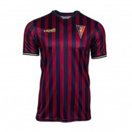
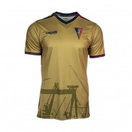
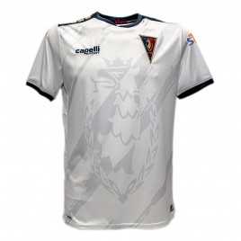

Koszulki meczowe

Domowa
Trykot domowy jest stylowym połączeniem aktualnych trendów z tradycją. Subtelnie zarysowane „1948” symbolizuje rok powstania Pogoni Szczecin. Granatowo-bordowy ściągacz przy rękawach to komponent tożsamy z miejską modą i klasyczną elegancją. Zwracamy uwagę również na kotwicę, którą estetycznie przecina najważniejsze słowo tegorocznej identyfikacji – „Portowcy”.
KUP TERAZ

Wyjazdowa
Koszulka wyjazdowa odwołuje się do minimalistycznego, przemysłowego klimatu. Naszą inspiracją były dźwigi Stoczni Szczecińskiej, które w upalny dzień mienią się w słońcu na złoty kolor. To też właśnie one zdobią dolną część koszulki.
KUP TERAZ

Alternatywna
Gryf zdobi znaczną powierzchnię przedniej części koszulki. Odmienne złote kolory akcentów występujących na tyle meczówek, czyli w numeracji, nazwiskach zawodników, a także logo Miasta Szczecin.
KUP TERAZ